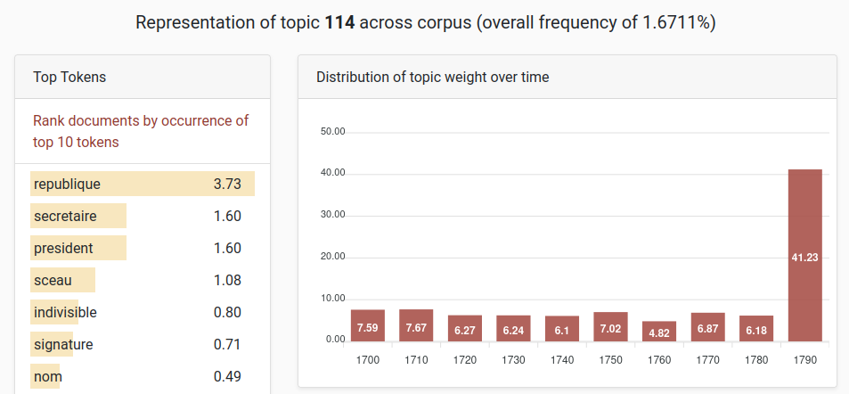
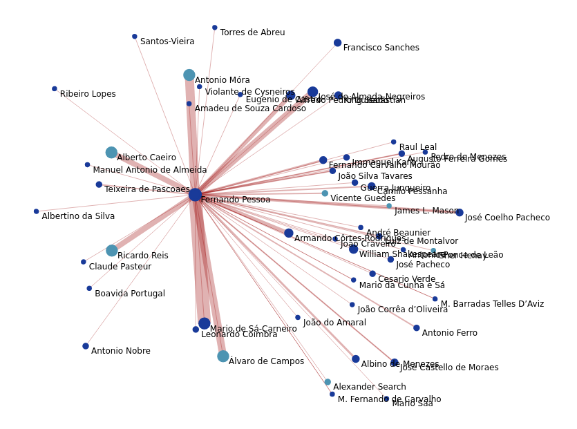
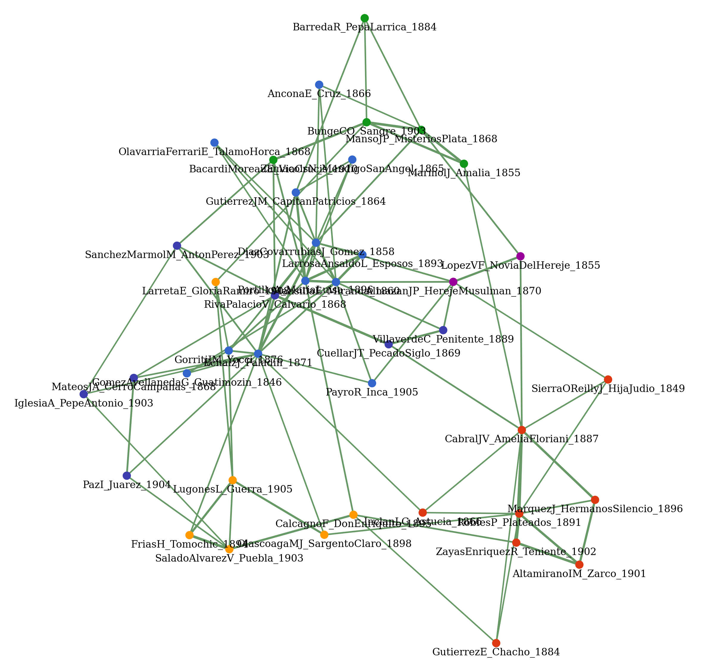
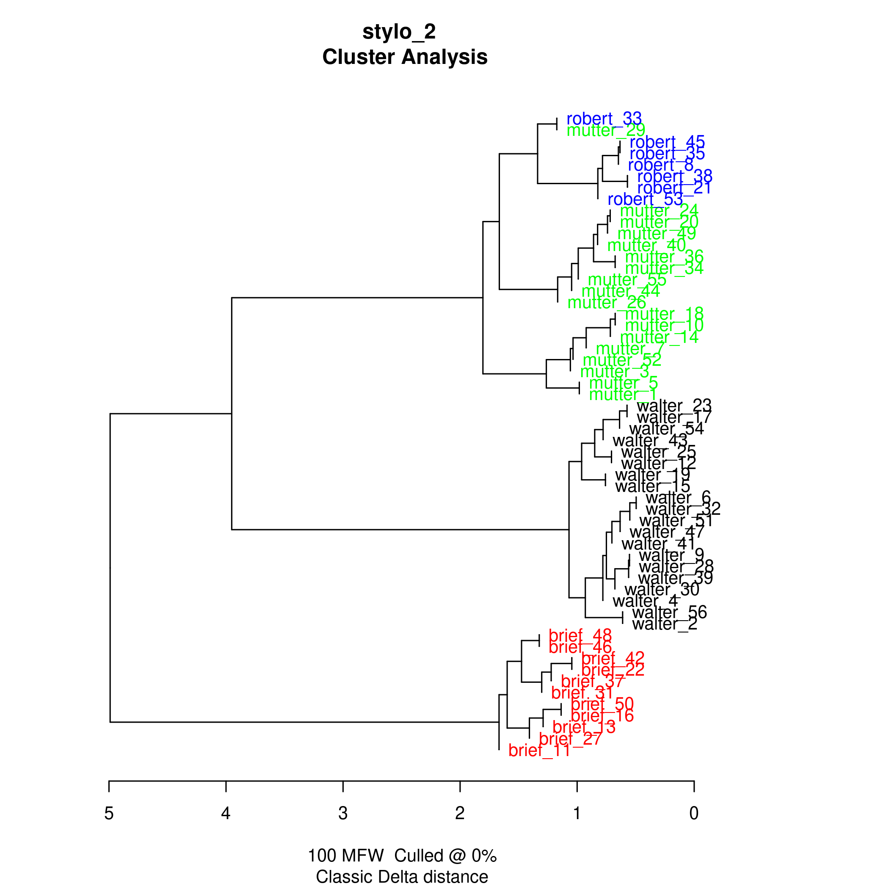
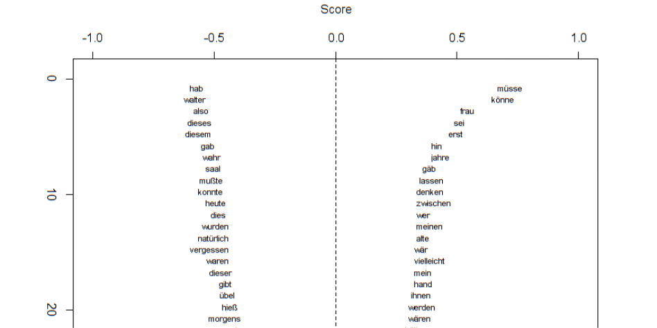
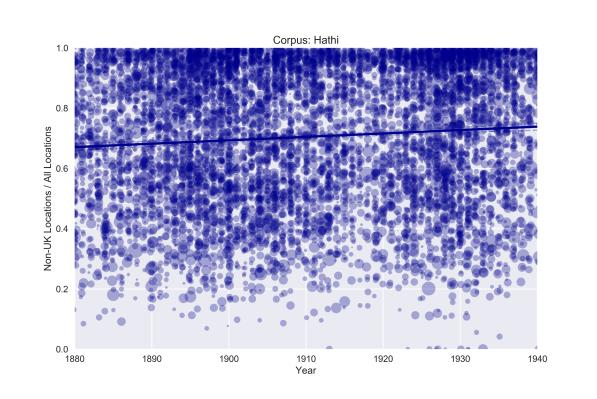
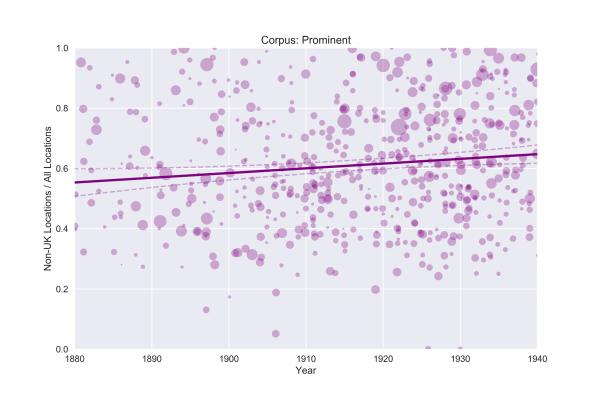
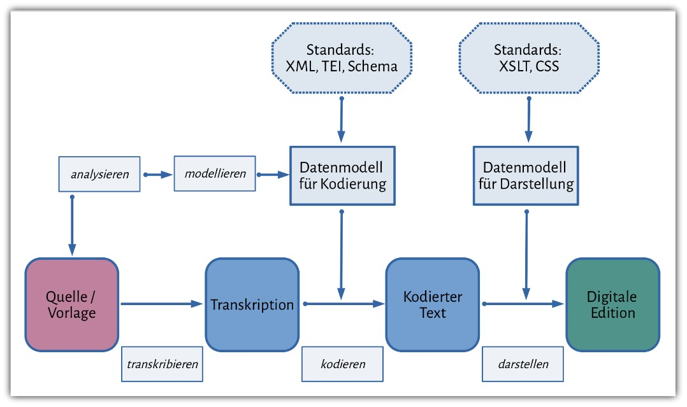

Methoden einer Computational Theology:
Computationelle Analysen
von Strukturen und Relationen
Ulrike Henny-Krahmer (Universität Rostock)
Computational Theology. Methoden - Praktiken - Perspektiven
14.-15.9.23
Universität Heidelberg


Übersicht
- Intertextualität
- Netzwerkanalyse
- Stilistische Analyse
- Räumliche Analyse - Literarische Geographie
- Digitale Edition
- Fragen und Diskussion
Intertextualität
Intertextualität
"Der Begriff der Intertextualität bezeichnet die Beziehungen, Funktionen und Wirkungen, welche zwischen zwei oder mehr Texten entstehen, indem die Texte in Zitaten, Anspielungen oder durch strukturelle Parallelen aufeinander verweisen." (Nantke)
Intertextualität
- Ursprung in der neuphilologischen Literaturwissenschaft: 1960er/1970er-Jahre, Julia Kristeva, Roland Barthes
- Relevanz intertextualler Referenzen: reicht bis in die Antike zurück (historische Praktiken)
Intertextualität mit digitalen Methoden
- Rekonzeptualisierung des Phänomens
- methodologisch: Vergleich von Texteigenschaften
- numerische Werte, messbare Merkmalsausprägungen, Textoberfläche
Ansätze digitaler Intertextualitätsforschung
- Manuelle digitale Modellierung intertextueller Beziehungen
- Computationelle Analysen von Text Reuse
- Automatisierte Detektion semantischer Textähnlichkeiten
Beispiele
- HyperHamlet: http://www.hyperhamlet.unibas.ch/
- WordWeb/IDEM: http://wordweb-idem.ch/
- Intertextual Hub: https://intertextual-hub.uchicago.edu/
- Tesserae: https://tesserae.caset.buffalo.edu/
Beispiel Intertextual Hub
Netzwerkanalyse
Netzwerkanalyse
"Network thinking is poised to invade all domains of human activity and most fields of human inquiry. It is more than another helpful perspective or tool. Networks are by their very nature the fabric of most complex systems, and nodes and links deeply infuse all strategies aimed at approaching our interlocked universe." (Barabási 2002, zitiert in Burge)
Netzwerkanalyse: "network turn"
- Untersuchung von relationalen Objekten/Einheiten, ihrer Beziehungen und der Strukturen, die sie schaffen
- computergestützte Netzwerkanalyse: Makroanalyse, Distant Reading
- neue Perspektiven, Rekonzeptualisierung möglich
Netzwerkanalyse: Begriffe, Tools, Kritik
Beispiel: Personen- und Figurennetzwerke in Fernando Pessoas Publikationsplänen
Beispiel: Topics in hispanoamerikanischen historischen Romanen des 19. Jahrhunderts
Stilistische Analyse
Stilistische Analyse: Stilometrie
- stilistischer Vergleich von Texten oder Textpassagen auf Grundlage statistischer Verteilungen (meist: häufigste Wörter)
- Untersuchungsziele: stilistische Entwicklung/Differenzierung von einzelnen Texten, Werken, einer Epoche, usw.
- Anwendungen: z.B. Autorschaftsattribution, Gattungsklassifikation
- schon frühe historische Ursprünge auch vor der Digitalität
Stilometrie: Methoden und Tools
- Distanzmaß: Burrows Delta (2002)
- Kontrastives Maß: Craigs Zeta (2009)
- Tools: z.B. Stylo, Pydistinto
Beispiel: Roman "Ein Kapitel für sich"
(1975, Walter Kempowski)

Beispiel: Roman "Ein Kapitel für sich"
(1975, Walter Kempowski)
Robert vs. Walter
Räumliche Analyse - Literarische Geographie
Literaturgeographie
- vielfältige Bezugnahmen von Räumen der Fiktion auf den Realraum
- Arten von Literaturgeographie (nach Wilkens):
- thematic
- deep
- schematic
Computergestützte literarische Geographie
- Methoden z.B. Named Entity Extraction, automatisches Geocoding, Kartierung, statistische Analyse
- Entwicklungen (nach Wilkens):
- Konvergenz mit benachbarten Feldern
- größere Rolle für Populär- und Genreliteratur
- abnehmende sprachliche Vielfalt
Beispiel: englische fiktionale Texte 1880-1940
|  |  |
Digitale Edition
Was ist eine wissenschaftliche Edition?
„Edition ist die erschließende Wiedergabe historischer Dokumente.“ (Sahle 2013, 138)
Was ist eine digitale Edition?
“Eine digitale Edition ist dadurch bestimmt, dass sie die allgemeinen Anforderungen an eine wissenschaftliche Edition durch die Berücksichtigung der gegenwärtigen technischen Möglichkeiten und ihrer methodischen Implikationen erfüllt. Sie folgt einem „digitalen Paradigma“.” (Sahle 2013, 148)
Kataloge digitaler Editionen
- Catalog of Digital Scholarly Editions (Sahle 2020ff.)
http://www.digitale-edition.de - Catalogue Digital Editions (Franzini 2012ff.)
https://dig-ed-cat.acdh.oeaw.ac.at/
Referenzmodell Digitale Editionen
Schöch 2020, nach Rehbein und Fritze 2015
Beispiel: Tagebücher - Andreas Okopenko
Bibliografie
- Barabási, Albert-László (2002). Linked: The New Science of Networks. New York: Penguin Group.
- Burge, Caitlin (unveröffentlicht): "Network Analysis." In: Compendium of Computational Theology. Hrsg. von Christopher Nunn und Frederike van Oorschot.
- Burrows, John (2002): »›Delta‹: A measure of stylistic difference and a guide to likely authorship«. In: Literary and Linguistic Computing 17/3, 267–87.
- Craig, Hugh/Kinney, Arthur F. (2009): Shakespeare, Computers, and the Mystery of Authorship. Cambridge 2009.
- Horstmann, Jan (2018): "Stilometrie." In: forTEXT. Literatur digital erforschen. https://fortext.net/routinen/methoden/stilometrie.
- Nantke, Julia (unveröffentlicht): "Intertextualitätsforschung." In: Compendium of Computational Theology. Hrsg. von Christopher Nunn und Frederike van Oorschot.
- Sahle, Patrick (2013): Digitale Editionsformen, Zum Umgang mit der Überlieferung unter den Bedingungen des Medienwandels. Bd. 2: Befunde, Theorie und Methodik. Norderstedt: Books on Demand.
- Stockhausen, Annette von (unveröffentlicht): "Digitale Edition." In: Compendium of Computational Theology. Hrsg. von Christopher Nunn und Frederike van Oorschot.
- Wilkens, Matthew (unveröffentlicht): "Spatial Analysis, or The New Literary Geography." In: Compendium of Computational Theology. Hrsg. von Christopher Nunn und Frederike van Oorschot.
Fragen und Diskussion
Dokumente zum gemeinsamen Bearbeiten:
- Gruppe 1: https://tinyurl.com/9mwk82wk
- Gruppe 2: https://tinyurl.com/3przm6fz
- Gruppe 3: https://tinyurl.com/yh6cfspv